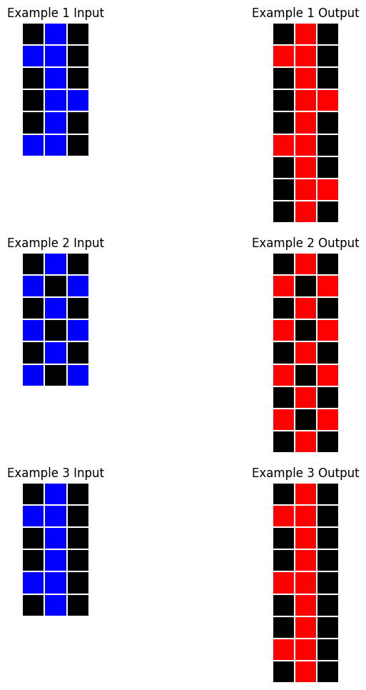

task = ArcTask('017c7c7b'); task.plot()
In order to encourage Claude to respond with solutions in the correct style, it is helpful to provide a few examples and insert them in the conversation history
Example (description:str, reasoning:str, new_primitives:str, input_model:str, output_model:str)
Represents an example ARC solution
example_017c7c7b = Example(
description="""\
The input grid is a 6x3 grid with a blue colored pattern on a black background. \
The output grid is a 9x3 grid. The first 6 rows of the output grid contain the same pattern as the input grid \
and the additional rows are filled appropriately to form a cyclical or repeating pattern of rows. \
The resulting cyclical patterns in the output grids have varying cycle lengths. \
The color of the entire pattern in the output grid is changed from blue to red.
""",
reasoning="""\
1. Pattern & Transformation Analysis:
- Fixed-size grids: 6x3 input, 9x3 output
- Single blue pattern on black background transforms to red
- Pattern extends vertically with cyclic repetition
- Cycle length varies between examples
- Two key transformations: cyclic extension and color change (blue → red)
2. Shape Extraction & Representation:
- Entire grid is one cohesive pattern
- No need for complex shape extraction
- Simple Bitmap representation sufficient
- Background color consistent (black)
3. Required Capabilities:
- Period detection for cyclic patterns
- Pattern extension while preserving structure
- Color transformation (value mapping 1 → 2)
- No existing primitive handles cyclic patterns
4. Implementation Strategy:
- Input: Single Bitmap object preserving full grid
- Output: Detect period, extend pattern, transform color
- New CyclicPattern primitive needed for:
* Period detection along specified axis
* Pattern extension to desired length
* Integration with existing primitives
5. Edge Cases:
- Various cycle lengths (1, 2, 3...)
- Patterns without obvious repetition
- Full-length cycles
This suggests a solution focusing on pattern-level operations rather than individual shapes, \
with a new CyclicPattern primitive handling the cyclic nature of the transformations. \
The implementation can be straightforward since we're treating each grid as a single pattern, \
with complexity mainly in period detection and extension.
""",
new_primitives='''\
class CyclicPattern(BaseModel):
"""
Identify, represent, and manipulate cyclic patterns in ARC task grids,
particularly for tasks involving pattern repetition and extension.
"""
data: np.ndarray
period: int
axis: int = Field(0, ge=0, le=1)
model_config = {"arbitrary_types_allowed": True}
@classmesthod
def from_array(cls, arr: np.ndarray, axis: int = 0) -> 'CyclicPattern':
"""Create a CyclicPattern instance from a numpy array."""
return cls(data=arr, period=cls.find_period(arr, axis), axis=axis)
@staticmethod
def find_period(arr: np.ndarray, axis: int = 0) -> int:
"""Find the smallest period along a specified axis of a NumPy array."""
n = arr.shape[axis]
if n == 0: return 0 # Undefined period for empty axis
for p in range(1, n):
pattern = np.take(arr, indices=range(p), axis=axis)
repeats = int(np.ceil(n / p))
tiled = np.concatenate([pattern] * repeats, axis=axis)
slicer = [slice(None)] * arr.ndim
slicer[axis] = slice(0, n)
tiled = tiled[tuple(slicer)]
if np.array_equal(arr, tiled): return p
return n # The entire axis if no smaller period is found
def extend(self, length: int) -> np.ndarray:
"""Extend the pattern to a specified length."""
pattern = np.take(self.data, range(self.period), axis=self.axis)
repeats = [1] * self.data.ndim
repeats[self.axis] = length // self.period + 1
tiled = np.tile(pattern, repeats)
slices = [slice(None)] * self.data.ndim
slices[self.axis] = slice(length)
return tiled[tuple(slices)]
def to_array(self) -> np.ndarray:
"""Convert the cyclic pattern to a numpy array."""
return self.data
def __len__(self) -> int:
"""Get the length of the pattern along its axis."""
return self.data.shape[self.axis]\
''',
input_model='''\
class InputModel(Grid):
size: Literal[Vector(6, 3)]
@classmethod
def from_array(cls, arr: np.ndarray) -> 'InputModel':
return cls(
size=Vector(*arr.shape),
objects=[Bitmap(position=Vector(0, 0), data=arr)]
)\
''',
output_model='''\
class OutputModel(Grid):
size: Literal[Vector(9, 3)]
@classmethod
def from_input(cls, input_grid: InputModel) -> 'OutputModel':
input_pattern = CyclicPattern.from_array(input_grid.objects[0].data, axis=0)
extended_pattern = input_pattern.extend(9)
red_pattern = np.where(extended_pattern == 1, 2, 0)
return cls(
size=Vector(9,3),
objects=[Bitmap(position=Vector(0, 0), data=red_pattern)]
)\
'''
)example_36d67576 = Example(
description='''\
The input grid contains multiple shapes: one complete shape and several partial copies of that shape. \
The partial copies are transformed versions of the complete shape (rotated and/or reflected). \
The task is to identify how each partial shape relates to the complete shape and replace each partial shape \
with its complete transformed version.\
''',
reasoning='''\
1. Task Analysis:
- Input contains multiple shapes:
* One complete reference shape
* Multiple partial shapes
- Partial shapes are transformed versions of complete shape
- Transformations include rotations and reflections
- Goal: Replace partials with complete transformed versions
2. Shape Identification Requirements:
- Need to extract contiguous shapes from grid
- Must distinguish complete from partial shapes
- First shape extracted is likely complete (largest)
- ShapeExtractor primitive suitable for this task
3. Transformation Analysis:
- Need to test all possible transformations:
* Rotations (0°, 90°, 180°, 270°)
* Reflections (horizontal, vertical)
* Transpositions
- Must match partial shapes allowing for missing parts
- PatternMatcher with 'allow_extra' mode ideal for this
4. Implementation Strategy:
- Input Model:
* Separate complete shape from partials
* Store as Bitmap objects
* Use background_color for grid reconstruction
- Output Model:
* Generate all possible transformations
* Find best match for each partial shape
* Replace partials with complete transformed versions
5. Edge Cases:
- Multiple equally-sized shapes
- Partial shapes with minimal overlap
- Ambiguous transformations
- Different colored shapes
No new primitives needed as existing ones (ShapeExtractor, PatternMatcher, Bitmap)
provide all required functionality for shape extraction, transformation matching,
and grid reconstruction.\
''',
new_primitives='',
input_model='''\
class InputModel(Grid):
background_color: Literal[Color(0)] = Color(0)
full_shape: Bitmap
partial_shapes: List[Bitmap]
@model_validator(mode='before')
def set_objects(cls, values):
values['objects'] = [values['full_shape']] + values['partial_shapes']
return values
@classmethod
def from_array(cls, arr: np.ndarray) -> 'InputModel':
arr_mask = (arr != 0).astype(int)
shape_info = ShapeExtractor.extract_contiguous_regions(arr_mask, 1)
colored_shapes = []
for shape, pos in shape_info:
colored_shapes.append((
arr[pos[0]:pos[0]+shape.shape[0], pos[1]:pos[1]+shape.shape[1]],
pos
))
full_shape = Bitmap(position=Vector(*colored_shapes[0][1]),
data=colored_shapes[0][0])
partial_shapes = [
Bitmap(position=Vector(*pos), data=shape) for shape, pos in colored_shapes[1:]
]
return cls(
size=Vector(*arr.shape),
full_shape=full_shape,
partial_shapes=partial_shapes
)\
''',
output_model='''\
class OutputModel(Grid):
@classmethod
def from_input(cls, input_grid: InputModel) -> 'OutputModel':
full_shape = input_grid.full_shape.to_array()
transformations = [
full_shape,
np.rot90(full_shape, 1),
np.rot90(full_shape, 2),
np.rot90(full_shape, 3),
np.flip(full_shape, 0),
np.flip(full_shape, 1),
full_shape.T,
np.fliplr(full_shape).T
]
new_shapes = []
for obj in input_grid.partial_shapes:
# Create a grid with just the partial shape object
obj_arr = obj.to_array(input_grid.size)
obj_arr[obj_arr == -1] = 0
# Find the transformation that best matches the partial shape
matches = [(t, *PatternMatcher.find_best_match(obj_arr, t, match_type='allow_extra')) for t in transformations]
best_match = max(matches, key=lambda m: m[-1]) # matches is a list of (transformation, position, overlap_count)
new_shapes.append(Bitmap(position=best_match[1], data=best_match[0]))
return cls(
size=input_grid.size,
background_color=input_grid.background_color,
objects=[input_grid.full_shape] + new_shapes
)\
'''
)example_007bbfb7 = Example(
description='''\
The input grid is a 3x3 grid with a single-colored pattern on a black background. \
The output grid size is 9x9. Each pixel in the input grid corresponds to a 3x3 section in the output grid. \
For each pixel in the input grid that is colored, its corresponding section of the output grid is filled \
with a copy of the entire input grid.\
''',
reasoning='''\
1. Pattern Analysis:
- Input: 3x3 grid with single-colored pattern on black
- Output: 9x9 grid with recursive pattern structure
- Each colored pixel in input maps to 3x3 section in output
- These 3x3 sections contain copies of entire input pattern
2. Transformation Properties:
- Scale factor is 3 (3x3 → 9x9)
- Pattern replication follows a specific rule:
* For each non-zero input pixel
* Replace with full input pattern
* For zero pixels, keep as zero
- This resembles a Kronecker product operation:
* Binary mask of pattern × Original pattern
* Will naturally create the required structure
3. Implementation Strategy:
- Input Model:
* Single Bitmap sufficient for 3x3 pattern
* Fixed size constraint (3x3)
- Output Model:
* Create binary mask of non-zero elements
* Apply Kronecker product for pattern replication
* Result gives correct 9x9 structure
4. Edge Cases:
- Empty input patterns
- Single pixel patterns
- Fully filled patterns
- Different colors
No new primitives needed as the transformation can be handled efficiently using
numpy's Kronecker product (kron) operation combined with existing Bitmap primitive.\
''',
new_primitives='',
input_model='''\
class InputModel(Grid):
size: Literal[Vector(3, 3)]
pattern: Bitmap
@model_validator(mode='before')
def set_objects(cls, values):
values['objects'] = [values['pattern']]
return values
@classmethod
def from_array(cls, arr: np.ndarray) -> 'InputModel':
return cls(
size=Vector(*arr.shape),
pattern=Bitmap(position=Vector(i=0, j=0), data=arr)
)\
''',
output_model='''\
class OutputModel(Grid):
size: Literal[Vector(9, 9)] = Vector(9, 9)
@classmethod
def from_input(cls, input_grid: InputModel) -> 'OutputModel':
input_pattern = input_grid.pattern.data
binary_mask = (input_pattern != 0).astype(int)
output_pattern = np.kron(binary_mask, input_pattern)
return cls(
objects=[Bitmap(position=Vector(0, 0), data=output_pattern)]
)\
'''
)